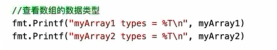
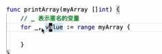
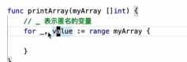
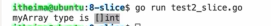
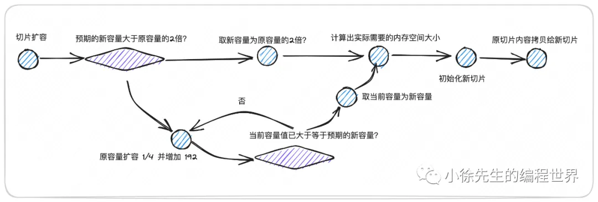
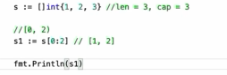
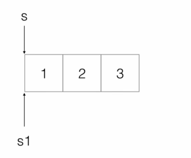

tips
// 原写法 s := []byte{} 得到的不是nil切片 // 替代写法 var s []byte 得到的是nil切片,但是可以照常append go自己会处理 也可以s := make([]byte, 0) //注意切片是左闭右开,
固定长度数组array
但是在go中不等同于其他语言数组的地位,可以说slice才是go语言的数组.
- 根据索引初始化 注意默认值是0
- 查看数组的数据类型：长度变成了类型的一部分,因此存在两个问题

- 因此传参的时候也要区分不同长度的数组了

- 而且仍然是一个值传递（把本来的数组拷贝给形参，所以还是会有之前那个内存和地址的问题，所以不能进行改动）
- 因此传参的时候也要区分不同长度的数组了
- 所以说要传参的话最好还是写动态数组,也可以使用切片操作符
[:]你可以把数组“切”一下,这里是创建一个引用 不是copy,相当于传了地址
range关键字
根据遍历不同集合返回不同值。
- 数组或切片
- 返回两个值 当前元素所在索引和当前元素值本身
 如果不关心某个返回值的话可以把它设置成匿名
如果不关心某个返回值的话可以把它设置成匿名
- 返回两个值 当前元素所在索引和当前元素值本身
动态数组:切片 slice
数据结构
连续的内存,本身只包含三个信息(可以在runtime包下查询)
type slice struct {
// 指向起点的地址
array unsafe.Pointer
// 切片长度
len int
// 切片容量
cap int
}- 指针 第一个元素的内存地址
- 长度 当前存放的元素个数 访问切片是否合法
- 容量 总共能装多少个元素(提前分配的空间元素个数),cap永远大于等于len 考虑性能优化
索引时只需要计算
目标地址 = 起始地址 + ( 索引 x 每个元素的大小 ),因此时间复杂度是O(1)
特征
- 传递时表面上是进行slice header的值传递,但因为内部存放的是unsafe.Pointer地址,因此实际上相当于引用传递,可以直接进行传递并在函数中进行值修改.[go语言中没有真正的引用传递,基本都是这样的伪引用传递].
- 因此len和cap在函数中被修改是不会反映到底层数据结构的
- 括号里面是空的，表示动态。可以看到类型也是动态数组类型
slice切片的四种声明方式/初始化
- 声明但不进行初始化
- 判断一个slice是否为空nil [没有空间,而全0不算空]
- 空slice不能够进行赋值,但是可以进行append(相当于一个一个开辟空间)
var s []init
//判断一个slice是否为0
if slice1 == nil{
fmt.println("是一个空切片")
}else{
fmt.println("不是一个空切片")}else和前后两个括号需要在同一行否则会报语法错
- 基于make进行初始化
- 只初始化len而不初始化cap.
- 此时会将len和cap同时默认设置为len的值.因为如果len>cap会初始化失败.
- 切片的长度一旦被指定了，就代表对应位置已经被分配了元素，设置的会是对应元素类型下的零值.
- 分别指定len和cap
- 在index【len,cap)的区域无法被访问,因为逻辑上不存在元素,访问会被报错.
- 只初始化len而不初始化cap.
s := make([]int,8)
s := make([]int,8,16)%v 可以打印数组内详细数据
- 初始化连带赋值
- 会将len和cap同时设为3并且完成赋值
s := []int{2,3,4}初始化源码
func makeslice(et *_type, len, cap int) unsafe.Pointer {
// 根据 cap 结合每个元素的大小，计算出消耗的总容量
mem, overflow := math.MulUintptr(et.size, uintptr(cap))
if overflow || mem > maxAlloc || len < 0 || len > cap {
// 倘若容量超限，len 取负值或者 len 超过 cap，直接 panic
mem, overflow := math.MulUintptr(et.size, uintptr(len))
if overflow || mem > maxAlloc || len < 0 {
panicmakeslicelen()
}
panicmakeslicecap()
}
// 走 mallocgc 进行内存分配以及切片初始化,以及回收
return mallocgc(mem, et, true)
}追加与截取
切片的追加
通过 append 操作，可以在 slice 的末尾，额外新增一个元素.
- 这里的末尾指的是针对 slice 的长度 len 而言.实际上截取的话,从起点开始的容量会保留,详见辨析5
- 这个过程中倘若发现 slice 的剩余cap已经不足了，则会对 slice 进行扩容.动态开辟相当于本来cap的容量
在创建 slice 时，如果能够预估到其未来所需的容量空间,应该提前分配好对应容量，避免在运行过程中频繁触发扩容操作，这样会对性能产生不利的影响.

实例1
倘若希望使用 append 操作完成 slice 赋值，则应该在初始化 slice 时，给其设置不同的长度 len 和容量 cap 值，cap 和 len 之间的差值就是预留出来用于 append 操作的空间. 具体代码如下：
func Test_slice(t *testing.T){
s := make([]int,0,5)
for i := 0; i < 5; i++{
s = append(s, i)//追加的对象数组,以及追加的数据
}
// 结果为：
// s: [0,1,2,3,4]
}实例2
我们将 slice 的长度和容量都设置为 5,然后通过遍历 slice 的方式进行执行位置元素的赋值（不使用 append 操作）：
func Test_slice(t *testing.T){
s := make([]int,5)
for i := 0; i < 5; i++{
s[i] = i
}
// 结果为：
// s: [0,1,2,3,4]
}扩容
当len与cap相等时,下一次append操作就会进行一次扩容
// len:4, cap: 4
s := []int{2,3,4,5}
// len:5, cap: 8 len=原来的长度+1,cap=原来的cap*2
s = append(s,6)
- 预期容量:
- 如果只追加一个元素,预期容量就是原本的容量+1,类似的.
- 老容量<256 则扩容为原来的两倍
- 老容量>256 那么就进入一个循环,按照特殊方式扩容直到大于等于预期容量.如果在这个循环中数值太大了以至于越界,那么就直接取预期新容量为最终值
- 如果预期元素是比如一个切片,那么预期容量就可能会超出原容量的两倍.
- 如果只追加一个元素,预期容量就是原本的容量+1,类似的.
- 根据数据类型推算出实际需要的内存大小,然后mallocgc中还要对内存分配单元mspan的等级制度,推算得到实际需要申请的内存空间大小(向上取整)
- mheap是go管理的所有内存之和
- mspan就是标准大小地块,有不同大小等级共程序申请使用.
- 调用 mallocgc，对新切片进行内存初始化
- 调用 memmove 方法，将老切片中的内容拷贝到新切片中
- 返回扩容后的新切片【扩容后会变成新的地址】 源码:
func growslice(et *_type, old slice, cap int) slice {
//...
if cap < old.cap {
panic(errorString("growslice: cap out of range"))
}
if et.size == 0 {
// 倘若元素大小为 0，则无需分配空间直接返回
return slice{unsafe.Pointer(&zerobase), old.len, cap}
}
// 计算扩容后数组的容量
newcap := old.cap
// 取原容量两倍的容量数值
doublecap := newcap + newcap
// 倘若新的容量大于原容量的两倍，直接取新容量作为数组扩容后的容量
if cap > doublecap {
newcap = cap
} else {
const threshold = 256
// 倘若原容量小于 256，则扩容后新容量为原容量的两倍
if old.cap < threshold {
newcap = doublecap
} else {
// 在原容量的基础上，对原容量 * 5/4 并且加上 192
// 循环执行上述操作，直到扩容后的容量已经大于等于预期的新容量为止
for 0 < newcap && newcap < cap {
newcap += (newcap + 3*threshold) / 4
}
// 倘若数值越界了，则取预期的新容量 cap 封顶
if newcap <= 0 {
newcap = cap
}
}
}
var overflow bool
var lenmem, newlenmem, capmem uintptr
// 基于容量，确定新数组容器所需要的内存空间大小 capmem
switch {
// 倘若数组元素的大小为 1，则新容量大小为 1 * newcap.
// 同时会针对 span class 进行取整
case et.size == 1:
lenmem = uintptr(old.len)
newlenmem = uintptr(cap)
capmem = roundupsize(uintptr(newcap))
overflow = uintptr(newcap) > maxAlloc
newcap = int(capmem)
// 倘若数组元素为指针类型，则根据指针占用空间结合元素个数计算空间大小
// 并会针对 span class 进行取整
case et.size == goarch.PtrSize:
lenmem = uintptr(old.len) * goarch.PtrSize
newlenmem = uintptr(cap) * goarch.PtrSize
capmem = roundupsize(uintptr(newcap) * goarch.PtrSize)
overflow = uintptr(newcap) > maxAlloc/goarch.PtrSize
newcap = int(capmem / goarch.PtrSize)
// 倘若元素大小为 2 的指数，则直接通过位运算进行空间大小的计算
case isPowerOfTwo(et.size):
var shift uintptr
if goarch.PtrSize == 8 {
// Mask shift for better code generation.
shift = uintptr(sys.Ctz64(uint64(et.size))) & 63
} else {
shift = uintptr(sys.Ctz32(uint32(et.size))) & 31
}
lenmem = uintptr(old.len) << shift
newlenmem = uintptr(cap) << shift
capmem = roundupsize(uintptr(newcap) << shift)
overflow = uintptr(newcap) > (maxAlloc >> shift)
newcap = int(capmem >> shift)
// 兜底分支：根据元素大小乘以元素个数
// 再针对 span class 进行取整
default:
lenmem = uintptr(old.len) * et.size
newlenmem = uintptr(cap) * et.size
capmem, overflow = math.MulUintptr(et.size, uintptr(newcap))
capmem = roundupsize(capmem)
newcap = int(capmem / et.size)
}
// 进行实际的切片初始化操作
var p unsafe.Pointer
// 非指针类型
if et.ptrdata == 0 {
p = mallocgc(capmem, nil, false)
// ...
} else {
// 指针类型
p = mallocgc(capmem, et, true)
// ...
}
// 将切片的内容拷贝到扩容后的位置 p
memmove(p, old.array, lenmem)
return slice{p, old.len, newcap}
}切片的截取
 要注意这里是左闭右开,因此[0:2]取的是第0.1位,2并没有算进来
-
[:]=[0:len(s)]
-
[:3]=[0:3]
-
[4:]=[4:len(s)]
-
本质上是引用传递操作,因此无论截取多少次,底层都是同一块内存空间数据.不过截取会创建出新的slice header实例
-
因为实际上指向的是同一个地址区间,因此修改其中一个元素会影响到另外一个数组的
-
如果要分开截取的话就使用copy函数,相当于拷贝一个副本,这样修改的话不会影响到本来的slice

元素删除
从切片中删除元素(只对len做修改)的实现思路，本质上和切片内容截取的思路是一致的.
- 删除 slice 中的首个元素，在操作上等同于从切片 index = 1 开始向后进行内容截取
- 删除 slice 的尾部元素，则操作等价于截取切片内容，并将终点设置在 len(s) - 1 的位置
- 删除 slice 中间的某个元素，操作思路则是采用内容截取加上元素追加的复合操作，可以先截取待删除元素的左侧部分内容，然后在此基础上追加上待删除元素后侧部分的内容
- 最后，当我们需要删除 slice 中的所有元素时，也可以采用切片内容截取的操作方式：s[:0]. 这样操作后，slice header 中的指针 array 仍指向原处，但是逻辑意义上其长度 len 已经等于 0，而容量 cap 则仍保留为原值.
func Test_slice(t *testing.T){
s := []int{0,1,2,3,4}
// [1,2,3,4]
s = s[1:]
}
func Test_slice(t *testing.T){
s := []int{0,1,2,3,4}
// [0,1,2,3]
s = s[0:len(s)-1]
}
func Test_slice(t *testing.T){
s := []int{0,1,2,3,4}
// 删除 index = 2 的元素
s = append(s[:2],s[3:]...)//
// s: [0,1,3,4], len: 4, cap: 5
t.Logf("s: %v, len: %d, cap: %d", s, len(s), cap(s))
}
func Test_slice(t *testing.T){
s := []int{0,1,2,3,4}
s = s[:0]
// s: [], len: 0, cap: 5
t.Logf("s: %v, len: %d, cap: %d", s, len(s), cap(s))
}…:
- 在函数定义中,
func myFunc(args ...int)，这里...意味着myFunc是一个可变参数函数。它可以接受任意数量的int作为参数（0个、1个或多个）。 - 在函数调用中 ：
append(s1, s2...)，这里的...意思是“将这个切片 (slice) 拆包/解开 (unpack/expand)”。- 因为append并不接受一个slice作为第二个参数,于是我们用…将slice拆分为单独元素
切片拷贝
包括简单拷贝和完整拷贝两种
- 简单拷贝
- 只要对切片的字面量进行赋值传递.这样相当于创建出了一个新的 slice header 实例，但是其中的指针 array、容量 cap 和长度 len 仍和老的 slice header 实例相同..
- 对切片进行%p打印地址,打印出来的不是slice header的地址,而是内部array字段指向的数组地址
- 切片的截取操作也属于是简单拷贝，s 和 s1 会使用同一片内存空间，只不过地址起点位置偏移了一个元素的长度. s1 和 s 的地址，刚好相差 8 个 byte.
- 完整拷贝
- 指的是会创建出一个和 slice 容量大小相等的独立的内存区域，并将原 slice 中的元素一一拷贝到新空间中.在实现上，slice 的完整复制可以调用系统方法 copy，通过日志打印的方式可以看到，s 和 s1 的地址是相互独立的.因此对应的数组地址也是全新的
问题辨析
func Test_slice(t *testing.T){
s := make([]int,10)
s = append(s,10)
t.Logf("s: %v, len of s: %d, cap of s: %d",s,len(s),cap(s))
}
//结果:s: [0 0 0 0 0 0 0 0 0 0 10], len of s: 11, cap of s: 20
func Test_slice(t *testing.T){
s := make([]int,0,10)
s = append(s,10)
t.Logf("s: %v, len of s: %d, cap of s: %d",s,len(s),cap(s))
}
//结果:s: [10], len of s: 1, cap of s: 10
func Test_slice(t *testing.T){
s := make([]int,10,11)
s = append(s,10)
t.Logf("s: %v, len of s: %d, cap of s: %d",s,len(s),cap(s))
}
//结果:s: [0 0 0 0 0 0 0 0 0 0 10], len of s: 11, cap of s: 11
func Test_slice(t *testing.T){
s := make([]int,10,12)
s1 := s[8:]
t.Logf("s1: %v, len of s1: %d, cap of s1: %d",s1,len(s1),cap(s1))
}
//结果:s1=[0 0] len=2 cap=4
func Test_slice(t *testing.T){
s := make([]int,10,12)
s1 := s[8:9]
t.Logf("s1: %v, len of s1: %d, cap of s1: %d",s1,len(s1),cap(s1))
}
//结果:s1=[0] len:1 cap:4
func Test_slice(t *testing.T){
s := make([]int,10,12)
s1 := s[8:]
s1[0] = -1
t.Logf("s: %v",s)
}
//结果:s: [0 0 0 0 0 0 0 0 -1 0]
func Test_slice(t *testing.T){
s := make([]int,10,12)
v := s[10]
// 求问，此时数组访问是否会越界
}
//会越界,因为len=10 是0-9的索引上有值
func Test_slice(t *testing.T){
s := make([]int,10,12)
s1 := s[8:]
s1 = append(s1,[]int{10,11,12}...)
v := s[10]
// ...
// 求问，此时数组访问是否会越界
}
//由于 s 预留的空间不足，s1 会发生扩容,扩容后会返回拷贝后的新切片,这里的拷贝是完整拷贝,意味着修改 s1 不再会影响到 s
// s 继续维持原本的长度值 10 和容量值 12，因此访问 s[10] 会panic
func Test_slice(t *testing.T){
s := make([]int,10,12)
s1 := s[8:]
changeSlice(s1)
t.Logf("s: %v",s)
}
func changeSlice(s1 []int){
s1[0] = -1
}
//结果:s=[00000000-10 ]s1=[-10 ]
func Test_slice(t *testing.T){
s := make([]int,10,12)
s1 := s[8:]
changeSlice(s1)
t.Logf("s: %v, len of s: %d, cap of s: %d",s, len(s), cap(s))
t.Logf("s1: %v, len of s1: %d, cap of s1: %d",s1, len(s1), cap(s1))
}
func changeSlice(s1 []int){
s1 = append(s1, 10)
}
//结果:s=[0000000000 ]不变 s1也不变
//在局部方法 changeSlice 中，虽然对 s1 进行了 append 操作，但这这会在局部方法中这个独立的 slice header 中生效，不会影响到原方法 Test_slice 当中的 s 和 s1 的**长度和容量**.
func Test_slice(t *testing.T){
s := []int{0,1,2,3,4}
s = append(s[:2],s[3:]...)
t.Logf("s: %v, len: %d, cap: %d", s, len(s), cap(s))
v := s[4]
// 是否会数组访问越界
}
//[0,1,3,4] 会.
func Test_slice(t *testing.T){
s := make([]int,512)
s = append(s,1)
t.Logf("len of s: %d, cap of s: %d",len(s),cap(s))
}
//结果:len=513 cap: 根据不到两倍且>256的计算方式(n += (n+3*256)/4) 可以计算到832, 然后根据mspan向上补齐的法则,得到848其他
slice 不是并发安全的数据结构,没有对并发读写的保护机制.